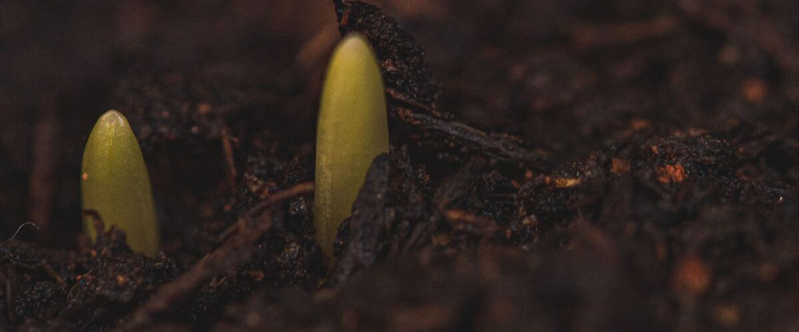

Why Northwest Gardeners Should Plant by Soil Temperature
The air warms up long before the soil does here. A $10 soil thermometer tells you when it's really time to plant beans, squash and tomatoes.
It happens every year. A sunny, 75-degree weekend arrives in April, garden centers fill with tomato and pepper starts, and everyone plants. Then the weather turns cool and wet again, and those plants sit there for a month, yellowing, or the bean seeds simply rot.
The reason is that, west of the Cascades, the soil warms up weeks after the air does. Portland's typical last frost is March 13, but the soil a few inches down often stays cold into May. Frost dates tell you when it's safe from freezing. Soil temperature tells you when warm-season crops will actually grow.
Soil temperatures to wait for
- 40°F and up: peas, spinach, lettuce, radishes and other cool-season crops will sprout, slowly.
- 50°F and up: carrots, beets, chard and onions grow well.
- 60°F and up: bush beans, sweet corn and cucumbers. Bean seeds planted into colder, wet soil often rot before they sprout.
- 65 to 70°F: tomatoes, peppers, squash and basil.
How to measure it
Push a soil thermometer about 4 inches into the bed in the morning, when soil is coolest, and check it for several days in a row. Once it holds at the target for about a week, you're ready. Soil thermometers cost around $10 at garden centers, and it's the cheapest garden tool that pays for itself.
How to warm soil faster
- Raised beds drain and warm sooner than ground-level beds.
- Black plastic laid over the bed for a week or two before planting raises the temperature several degrees. Cut holes and plant through it.
- Clear plastic or a cold frame warms soil even faster for early sowings.
- Wait to mulch. Straw and leaf mulches keep soil cool, which is great in July and a problem in May. Add them after the soil warms.
Rainline Garden's planting dates already build in this soil-temperature delay for each region. Enter your ZIP to see yours.